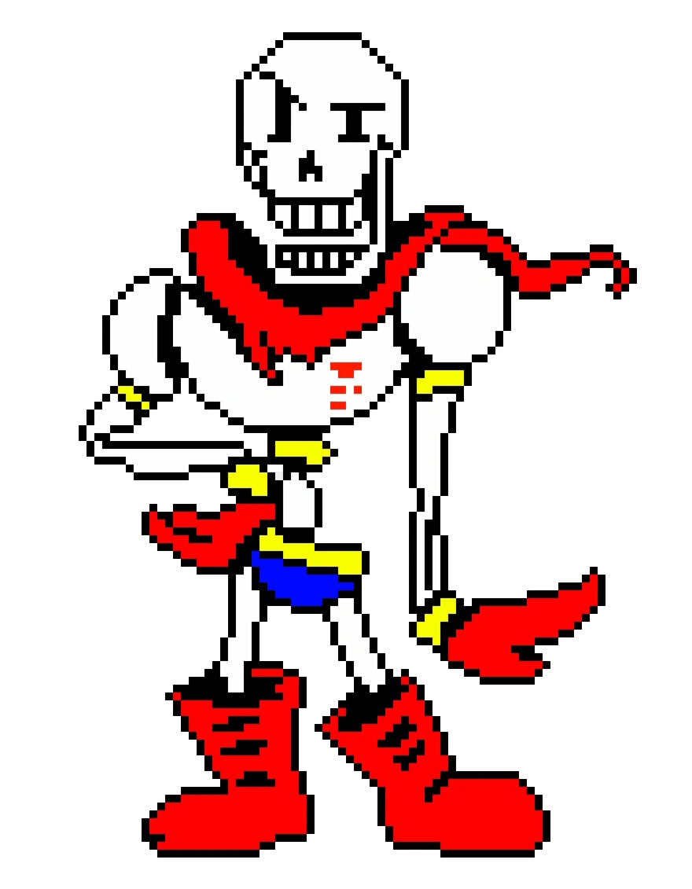

Undertale es un videojuego de rol en 2D de 2015 creado por el desarrollador independiente estadounidense Toby Fox. El jugador controla a un niño que ha caído al subsuelo: una gran región aislada bajo la superficie de la Tierra, separada por una barrera mágica. El jugador se encuentra con varios monstruos durante su viaje de regreso a la superficie, aunque algunos monstruos pueden involucrar al jugador en una pelea. El sistema de combate involucra al jugador navegando a través de los ataques mini bullet hell por parte del oponente. Se puede optar por pacificar y salvar a los monstruos o someterlos para matarlos . Estas elecciones afectan el juego, el diálogo, los personajes y la historia cambiando según las elecciones tomadas previamente. Fuera de algunas ilustraciones, Fox desarrolló la totalidad del juego por sí mismo, incluido el guion y la música. Para crearlo se inspiró en varias fuentes, entre estas incluyen la serie de juegos de rol Brandish, Mario & Luigi y Mother, la serie de juego de disparos bullet hell Touhou Project, el juego de rol Moon : Remix RPG Adventure y el programa de comedia británico Mr. Bean. Originalmente, Undertale debía tener una duración de dos horas y estaba programado para ser lanzado a mediados de 2013. Sin embargo, el desarrollo se retrasó durante casi tres años.
"Hace tiempo, dos razas gobernaron la Tierra: Monstruos y Humanos. Un dia, una guerra se desato entre las dos razas. Tras una larga batalla, los humanos fueron victoriosos. Sellaron a los monstruos bajo tierra con un hechizo mágico."
Undertale cuenta la historia de Frisk, un niño (de género indefinido) que escala el Monte Ebott, un lugar del que se cuenta que quienes lo escalan, nunca vuelven, y como este cae accidentalmente en el , llegando al Underground, lugar en el que habitan los monstruos, ahora Frisk debera atravesar el lugar buscando una manera de salir, descubriendo la historia de los monstruos y conociéndolos, haciéndose amigos de ellos y terminando la guerra ente humanos y monstruos y ayudando a los monstruos a escapar del Underground.
su género es indefinido.
aunque después descubrimos que es alguien Sádico, que busca la muerte de todo, en el juego se revela que es Asriel, que revivió en una flor después de uno de los experimentos de Alphys.


La banda sonora del juego fue compuesta en su totalidad por Fox con FL Studio.2 Siendo un músico autodidacta, compuso la mayoría de las pistas con poca iteración; el tema principal del juego, «Undertale», fue la única canción que se sometió a múltiples iteraciones en desarrollo. La banda sonora se inspiró en la música de los juegos de rol de Super NES,3 como EarthBound,4 la serie Bullet Hell Touhou Project,5 así como el webcomic Homestuck, para el cual Fox proporcionó parte de la música .3 Fox también declaró que trato de inspirarse en toda la música que escuchaba,6 particularmente en la de los videojuegos.4 Según Fox, más del 90% de las canciones fueron compuestas específicamente para el juego.7 «Megalovania», la canción utilizada durante la batalla de jefe contra Sans, se había utilizado previamente en Homestuck y en uno de los ROM hacks de EarthBound de Fox.89 Para cada sección del juego, Fox compuso la música antes de la programación, ya que ayudó a «decidir cómo debería ir la escena».7 Inicialmente intentó usar un tracker para componer la banda sonora , pero le resultó difícil de usar. Finalmente decidió reproducir segmentos de la música por separado y conectarlos en una pista.4 Para celebrar el primer aniversario del juego, Fox lanzó cinco obras musicales sin usar en su blog en 2016.10 Cuatro de las canciones del juego se lanzaron como contenido descargable oficial para la versión Steam del videojuego Groove Coaster de Taito.9.
Ruta Neutral,
Ruta Pacifista Verdadera,
Ruta Genocida..